Fixed-Point Fuel Rate Control System
In this demonstration you will generate and optimize the code for a fixed-point fuel rate control system designed using Simulink® and Stateflow®. See sldemo_fuelsys and fxpdemo_fuelsys for a detailed explanation of the model. The demonstration uses Real-Time Workshop® Embedded Coder™ (ERT target), however the concepts also apply for Real-Time Workshop.
Contents
- Familiarize Yourself with the Relevant Portions of the Model
- Optimizing Code With Evenly Spaced Power of Two Breakpoints
- Pumping Constant Power Of Two Spacing
- Pressure Estimate Power Of Two Spacing
- Speed Estimate Power Of Two Spacing
- Throttle Estimate Power Of Two Spacing
- Ramp Rate Ki Power Of Two Spacing
- Closing Remarks
- Related Demos
Familiarize Yourself with the Relevant Portions of the Model
Figures 1-4 show relevant portions of the sldemo_fuelsys model, which is a closed-loop system containing a "plant" and "controller". The plant is used to validate the controller in simulation early in the design cycle. In this example, we'll generate code for the relevant controller subsystem, "fuel_rate_control". Figure 1 shows the top-level simulation model.
% Open sldemo_fuelsys via rtwdemo_fuelsys_fxp and compile the diagram to % view the signal data types. rtwdemo_fuelsys_fxp; sldemo_fuelsys([],[],[],'compile'); sldemo_fuelsys([],[],[],'term');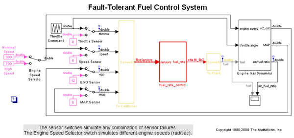
Figure 1: Top-level model of the "plant" and "controller"
The fuel rate control system is comprised of Simulink and Stateflow blocks, and is the portion of the model for which we'll generated code.
open_system('sldemo_fuelsys/fuel_rate_control');
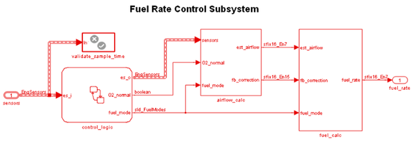 Figure 2: The fuel rate controller subsystem
The intake airflow estimation and closed loop correction system contains two lookup tables, Pumping Constant and Ramp Rate Ki, which we'll refer to later in this demo as we optimize the generated code.
open_system('sldemo_fuelsys/fuel_rate_control/airflow_calc');
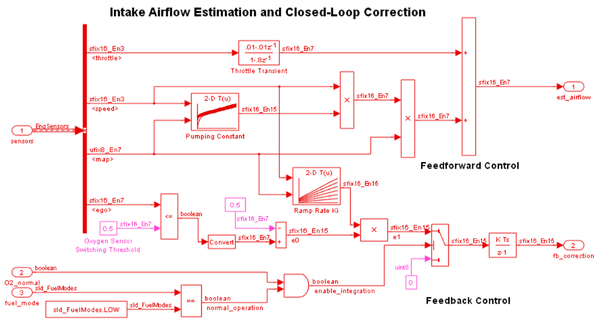 Figure 3: The airflow_calc subsystem
The control logic is a Stateflow chart that specifies the different modes of operation.
open_system('sldemo_fuelsys/fuel_rate_control/control_logic');
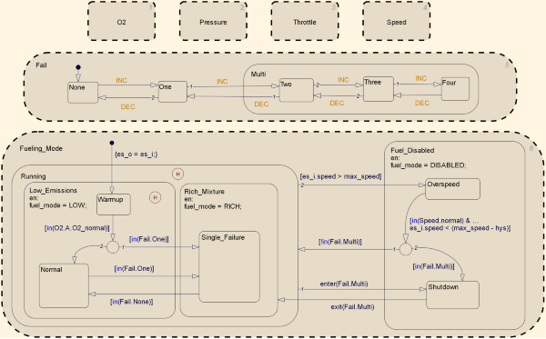 Figure 4: Fuel rate controller logic
Now let's remove the window clutter.
close_system('sldemo_fuelsys/fuel_rate_control/airflow_calc'); close_system('sldemo_fuelsys/fuel_rate_control/fuel_calc'); close_system('sldemo_fuelsys/fuel_rate_control/control_logic'); hDemo.rt=sfroot;hDemo.m=hDemo.rt.find('-isa','Simulink.BlockDiagram'); hDemo.c=hDemo.m.find('-isa','Stateflow.Chart','-and','Name','control_logic'); hDemo.c.visible=false; close_system('sldemo_fuelsys/fuel_rate_control');
Let's build the fuel rate control system only. Once the code generation process is complete, an HTML report detailing the generated code is displayed automatically. The main body of the code is located in fuel_rate_control.c.
rtwbuild('sldemo_fuelsys/fuel_rate_control');
### Starting Real-Time Workshop build procedure for model: fuel_rate_control ### Successful completion of Real-Time Workshop build procedure for model: fuel_rate_control
Figure 5 shows snippets of the generated code for the lookup table Pumping Constant.
To see the code for Pumping Constant, right-click the block and select Real-Time Workshop > Navigate to code...
rtwtrace('sldemo_fuelsys/fuel_rate_control/airflow_calc/Pumping Constant');
The code for pumping constant contains two breakpoint searches and a 2D interpolation. The SpeedVect breakpoint is unevenly spaced, and while the PressVect breakpoint is evenly spaced, neither have power of two spacing. This leads to extra code (ROM), including a division, and requires all breakpoints to be in memory (RAM).
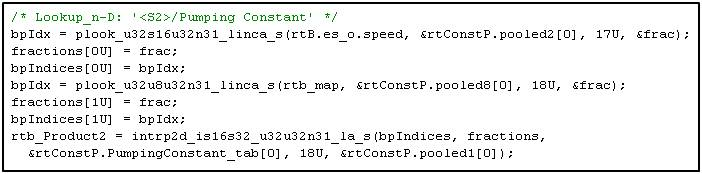
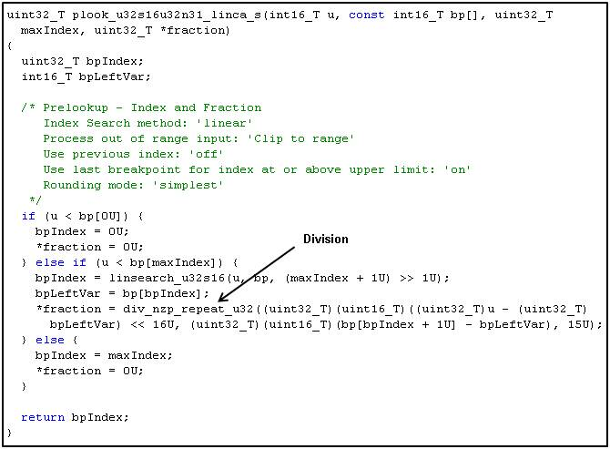
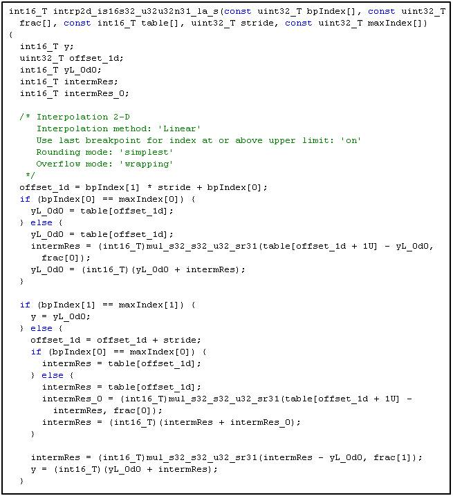
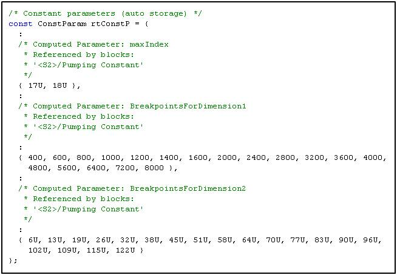
Figure 5: Generated code for Pumping Constant lookup (contains unevenly spaced breakpoints)
Optimizing Code With Evenly Spaced Power of Two Breakpoints
The generated code performance can be optimized using evenly spaced power of two breakpoints. In this example, we'll remap the lookup table data in the fuel rate control system based on the existing measured data.
The lookup table data is loaded into the model workspace when the model loads via the model's PostLoadFcn. We will retrieve the original table data via sldemo_fuelsys_data, modify it for evenly spaced power of two and reassign it in the model workspace.
td = sldemo_fuelsys_data('sldemo_fuelsys', 'get_table_data');
Compute new table data for evenly spaced power of two breakpoints
ntd.SpeedVect = 64 : 2^5 : 640; % 32 rad/sec ntd.PressVect = 2*2^-5 : 2^-5 : 1-(2*2^-5); % 0.03 bar ntd.ThrotVect = 0:2^1:88; % 2 deg ntd.RampRateKiX = 128:2^7:640; % 128 rad/sec ntd.RampRateKiY = 0:2^-2:1; % 0.25 bar
Remap table data
ntd.PumpCon = interp2(td.PressVect,td.SpeedVect,td.PumpCon, ntd.PressVect',ntd.SpeedVect); ntd.PressEst = interp2(td.ThrotVect,td.SpeedVect,td.PressEst,ntd.ThrotVect',ntd.SpeedVect); ntd.SpeedEst = interp2(td.PressVect,td.ThrotVect,td.SpeedEst,ntd.PressVect',ntd.ThrotVect); ntd.ThrotEst = interp2(td.PressVect,td.SpeedVect,td.ThrotEst,ntd.PressVect',ntd.SpeedVect);
Recompute Ramp Rate table data
ntd.RampRateKiZ = (1:length(ntd.RampRateKiX))' * (1:length(ntd.RampRateKiY)) * td.Ki;
Pumping Constant Power Of Two Spacing
figure('Tag','CloseMe'); mesh(td.PressVect,td.SpeedVect,td.PumpCon), hold on mesh(ntd.PressVect,ntd.SpeedVect,ntd.PumpCon) xlabel('PressVect'), ylabel('SpeedVect'), zlabel('PumpCon') title(sprintf('Pumping Constant\nOriginal Spacing (%dx%d) vs. Power of Two Spacing (%dx%d)',... size(td.PumpCon,1),size(td.PumpCon,2),size(ntd.PumpCon,1),size(ntd.PumpCon,2)));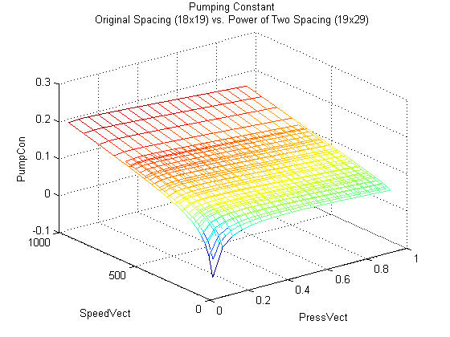
Pressure Estimate Power Of Two Spacing
clf mesh(td.ThrotVect,td.SpeedVect,td.PressEst), hold on mesh(ntd.ThrotVect,ntd.SpeedVect,ntd.PressEst) xlabel('ThrotVect'), ylabel('SpeedVect'), zlabel('PressEst') title(sprintf('Pressure Estimate\nOriginal Spacing (%dx%d) vs. Power of Two Spacing (%dx%d)',... size(td.PressEst,1),size(td.PressEst,2),size(ntd.PressEst,1),size(ntd.PressEst,2)));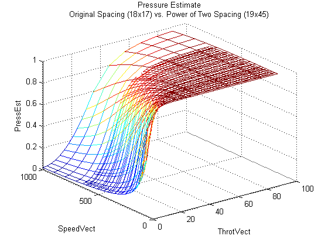
Speed Estimate Power Of Two Spacing
clf mesh(td.PressVect,td.ThrotVect,td.SpeedEst), hold on, mesh(ntd.PressVect,ntd.ThrotVect,ntd.SpeedEst) xlabel('PressVect'), ylabel('ThrotVect'), zlabel('SpeedEst') title(sprintf('Speed Estimate\nOriginal Spacing (%dx%d) vs. Power of Two Spacing (%dx%d)',... size(td.SpeedEst,1),size(td.SpeedEst,2),size(ntd.SpeedEst,1),size(ntd.SpeedEst,2)));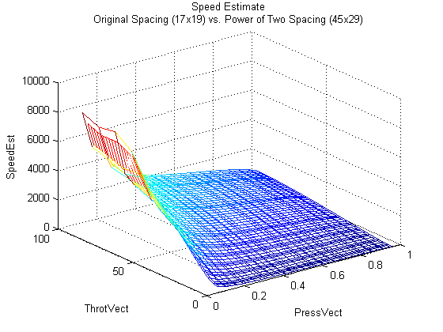
Throttle Estimate Power Of Two Spacing
clf mesh(td.PressVect,td.SpeedVect,td.ThrotEst), hold on mesh(ntd.PressVect,ntd.SpeedVect,ntd.ThrotEst) xlabel('PressVect'), ylabel('SpeedVect'), zlabel('ThrotEst') title(sprintf('Throttle Estimate\nOriginal Spacing (%dx%d) vs. Power of Two Spacing (%dx%d)',... size(td.ThrotEst,1),size(td.ThrotEst,2),size(ntd.ThrotEst,1),size(ntd.ThrotEst,2)));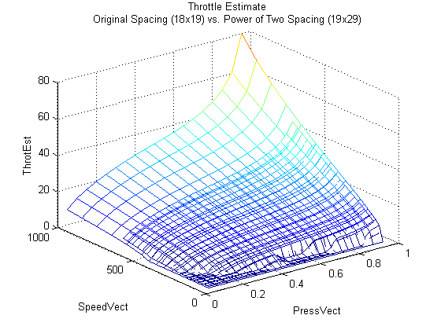
Ramp Rate Ki Power Of Two Spacing
clf mesh(td.RampRateKiX,td.RampRateKiY,td.RampRateKiZ'), hold on mesh(ntd.RampRateKiX,ntd.RampRateKiY,ntd.RampRateKiZ'), hidden off xlabel('RampRateKiX'), ylabel('RampRateKiY'), zlabel('RampRateKiZ') title(sprintf('Ramp Rate Ki\nOriginal Spacing (%dx%d) vs. Power of Two Spacing (%dx%d)',... size(td.RampRateKiZ,1),size(td.RampRateKiZ,2),size(ntd.RampRateKiZ,1),size(ntd.RampRateKiZ,2)));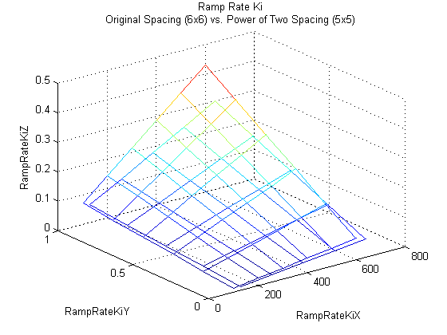
The model is configured to log simulation data for the top-level signals, whereby the result of a simulation is stored into workspace variable sldemo_fuelsys_output. Before updating the model workspace with the new data we'll save the result of the simulation in hDemo.orig_data for later comparison with the evenly spaced power of two table simulation.
set_param('sldemo_fuelsys','StopTime','8') sim('sldemo_fuelsys') hDemo.orig_data = sldemo_fuelsys_output;
Reassign the new table data in the model workspace
hDemo.hWS = get_param('sldemo_fuelsys', 'ModelWorkspace'); hDemo.hWS.assignin('PressEst', ntd.PressEst); hDemo.hWS.assignin('PressVect', ntd.PressVect); hDemo.hWS.assignin('PumpCon', ntd.PumpCon); hDemo.hWS.assignin('SpeedEst', ntd.SpeedEst); hDemo.hWS.assignin('SpeedVect', ntd.SpeedVect); hDemo.hWS.assignin('ThrotEst', ntd.ThrotEst); hDemo.hWS.assignin('ThrotVect', ntd.ThrotVect); hDemo.hWS.assignin('RampRateKiX',ntd.RampRateKiX); hDemo.hWS.assignin('RampRateKiY',ntd.RampRateKiY); hDemo.hWS.assignin('RampRateKiZ',ntd.RampRateKiZ);
Reconfigure lookup tables for evenly spaced data.
hDemo.lookupTables = find_system(get_param('sldemo_fuelsys','Handle'),... 'BlockType','Lookup_n-D'); for hDemo_blkIdx = 1 : length(hDemo.lookupTables) hDemo.blkH = hDemo.lookupTables(hDemo_blkIdx); set_param(hDemo.blkH,'IndexSearchMethod','Evenly spaced points') set_param(hDemo.blkH,'InterpMethod','None - Flat') set_param(hDemo.blkH,'ProcessOutOfRangeInput','None') end
Rerun the simulation for the evenly spaced power of two implementation, and store the result of the simulation in hDemo.pow2_data.
sim('sldemo_fuelsys')
hDemo.pow2_data = sldemo_fuelsys_output;
Let's compare the result of the simulation for the fuel flow rate and the air fuel ratio. The simulation exercised the Pumping Constant and Ramp Rate Ki lookup tables, and shows an excellent match for the evenly spaced power of two breakpoints relative to the original table data.
figure('Tag','CloseMe'); subplot(2,1,1); plot(hDemo.orig_data.fuel.Time, hDemo.orig_data.fuel.Data,'r-'); hold plot(hDemo.pow2_data.fuel.Time, hDemo.pow2_data.fuel.Data,'b-'); ylabel('FuelFlowRate (g/sec)'); title('Fuel Control System: Table Data Comparison'); legend('original','even power of two') axis([0 8 .75 2.25]); subplot(2,1,2); plot(hDemo.orig_data.air_fuel_ratio.Time, hDemo.orig_data.air_fuel_ratio.Data,'r-'); hold plot(hDemo.pow2_data.air_fuel_ratio.Time, hDemo.pow2_data.air_fuel_ratio.Data,'b-'); ylabel('Air/Fuel Ratio'); xlabel('Time (sec)') legend('original','even power of 2','Location','SouthEast') axis([0 8 11 16]);
Current plot held Current plot held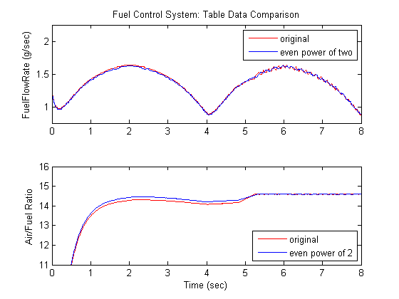
Finally, let's rebuild the fuel rate control system and compare the difference in the generated lookup table code.
rtwbuild('sldemo_fuelsys/fuel_rate_control');
### Starting Real-Time Workshop build procedure for model: fuel_rate_control ### Successful completion of Real-Time Workshop build procedure for model: fuel_rate_control
Figure 6 shows the same snippets of the generated code for the 'Pumping Constant' lookup table. As you can see, the generated code for evenly spaced power of two breakpoints is significantly more efficient than the unevenly spaced breakpoint case. The code consists of two simple breakpoint calculations and a direct index into the 2D lookup table data. The expensive division is avoided and the breakpoint data is not required in memory.
rtwtrace('sldemo_fuelsys/fuel_rate_control/airflow_calc/Pumping Constant');
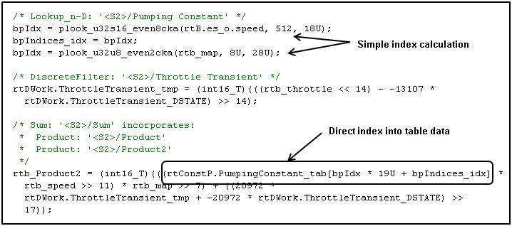
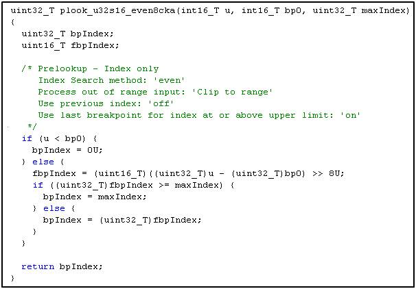
Figure 6: Generated code for Pumping Constant lookup (evenly spaced power of two breakpoints)
Close the demo.
close(findobj(0,'Tag','CloseMe')); clear hDemo* td ntd close_system('sldemo_fuelsys',0);
Closing Remarks
We touched on improving code efficiency using evenly spaced power of 2 breakpoints. This is one such optimization important for fixed-point code generation. The Simulink Model Advisor is a great tool for identifying other methods of improving code efficiency for a Simulink and Stateflow model. In particular, run the checks under the Real-Time Workshop Embedded Coder folder.
Related Demos
Refer to Table 1 for demos related to sldemo_fuelsys.
| Fixed-point design | fxpdemo_fuelsys |
| Production C/C++ code generation | rtwdemo_fuelsys |
Table 1: Related product demos using sldemo_fuelsys